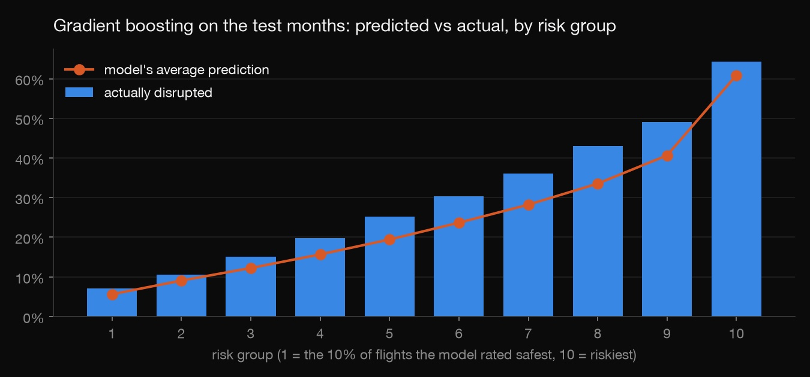
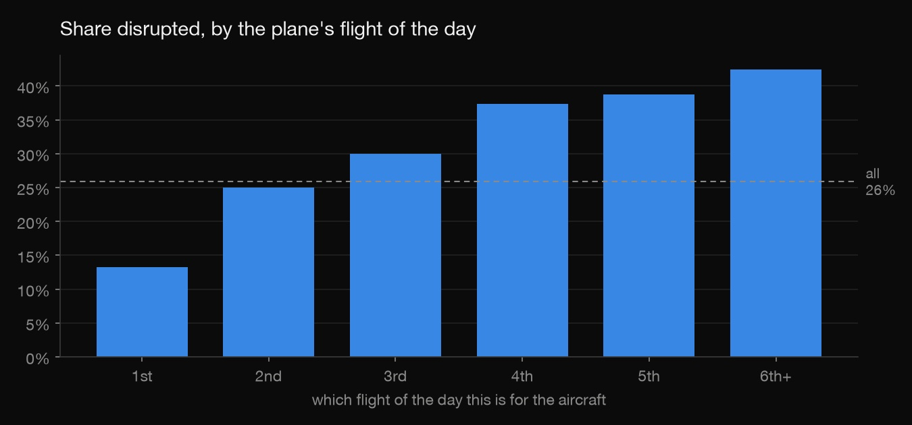
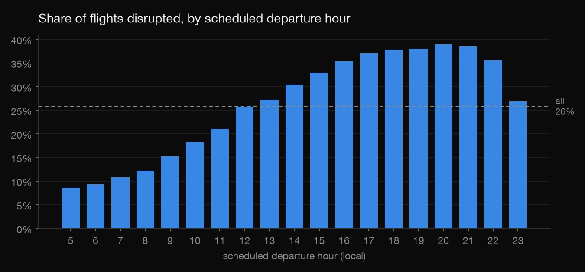
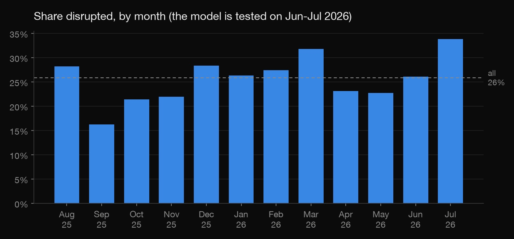
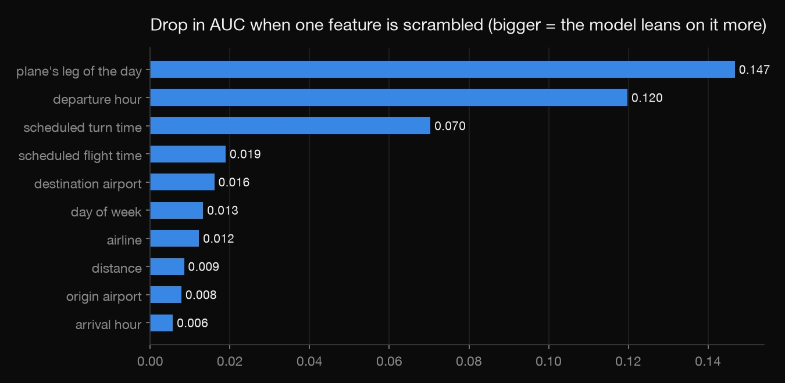

Python · Machine learning · 2026-10
Will My Flight Be Disrupted?
A machine-learning model that ranks Florida flights by their risk of being late, cancelled or diverted, using only what's on the schedule the night before.

This model ranks flights by risk; it doesn't forecast how bad a month will be. It has no weather data, so in July 2026 it predicted 25.2% of flights would be disrupted when 33.8% were. It is a tested model, not a deployed app.
01 — The problem
About one Florida flight in four arrives 15+ minutes late, is cancelled or is diverted. A traveller choosing between flights, or an airline deciding where to put spare crew, would like to know which flights are most at risk, and ideally the night before, when there is still time to act. Using only what's on the schedule, how well can a model tell the risky flights from the safe ones, and is it worth more than a simple pivot table?
02 — What I built
A dataset of 633,721 departures from 20 Florida airports (Aug 2025 – Jul 2026, US DOT data) with features known the night before. Five methods are compared on two test months none of them saw:
- Base rate: every flight gets the average. The floor.
- Pivot table: disruption rate by airline × departure hour, what an analyst would build in Excel.
- Logistic regression and gradient boosting (scikit-learn) on all the features.
- Gradient boosting without the aircraft features, to measure a possible leak (step 4).
A check script fails if anything measured on the day sneaks in, if the time periods overlap, or if any reported score doesn't recompute.
03 — How it was built
- 01
Build the dataset with only night-before facts
Each row is one scheduled departure: airline, airports, scheduled times, distance. It also records the aircraft's day: which flight of the day this is for that plane, and how long it is scheduled to sit on the ground before it. Working that out needs all 7 million US flights, because a plane's earlier legs often start outside Florida. Anything measured on the day, like actual times, delays or delay causes, is left out. A model that sees it isn't predicting, it's peeking.
plane = df.groupby(["FlightDate", "Tail_Number"], sort=False) df["leg"] = plane.cumcount() + 1 prev_dest, prev_arr = plane["Dest"].shift(), minutes(plane["CRSArrTime"].shift()) turn = df["dep_min"] - prev_arr # same airport, so both times are the same local clock - 02
Look before modeling
The pattern is visible before any model: delays snowball through a plane's day. 13.2% of a plane's first flights are disrupted vs 42.4% of its sixth or later, and 8.6% of 5 am departures vs 38.9% at 8 pm.


The month matters too, and that will matter for the test: July 2026 was the worst month of the year.

- 03
Split by time, compare against simple baselines
The models learn from Aug 2025 – Mar 2026. Apr – May 2026 is used to pick gradient-boosting settings (three were tried). Jun – Jul 2026 is the test: every model is refit on Aug – May and scored once. The split is by time, not random, because a random split lets a model learn from flights later the same day. The bar to clear is the pivot table, not zero.
train Aug 2025 - Mar 2026 422,136 flights fit valid Apr - May 2026 110,469 flights choose settings test Jun - Jul 2026 101,116 flights scored once - 04
Evaluate, and catch a leak
The first results looked fine, but one number didn't add up. All 1,738 flights with no aircraft recorded had been cancelled, so "no plane listed" gave the answer away. The night-before schedule would have named a plane, so those rows were dropped. A second, subtler risk: the data records the plane that actually flew, and airlines swap some planes on the day. The model without the aircraft features scores AUC 0.715 vs 0.736, so the swaps could be worth at most 0.021. The chart below scrambles one feature at a time to see how much the model leans on each.

- 05
Check it independently
check.pyrecomputes every model's test AUC from ranks, using plain pandas instead of the library that produced it. It also confirms that no day-of column is in the data, that the three periods don't overlap, that the leaked rows stay out, and that gradient boosting beats every baseline.
04 — Results
| Jun – Jul 2026 | AUC | Top 10%: disrupted | Top 10%: caught |
|---|---|---|---|
| Base rate | 0.500 | 30.2% | 10.0% |
| Pivot table: airline × hour | 0.707 | 50.1% | 16.7% |
| Logistic regression | 0.724 | 60.9% | 20.3% |
| Gradient boosting | 0.736 | 64.3% | 21.4% |
| Gradient boosting, no aircraft features | 0.715 | 56.1% | 18.7% |
AUC is the chance a random disrupted flight gets a higher risk score than a random on-time one (0.5 is a coin toss). Top 10% is the tenth of flights each method rated riskiest: how many were disrupted, and what share of all disruptions they caught. The chart at the top splits the test flights into ten risk groups.
- It ranks well. The flights it rated riskiest were disrupted 64.3% of the time vs 7.1% for the safest tenth. Its riskiest 10% were disrupted more often than the pivot table's (64.3% vs 50.1%).
- It under-predicts a bad month. June: 24.6% predicted, 26.1% happened. July: 25.2% vs 33.8%. It knows which flights are riskier, not how stormy the month will be.
- Not a crystal ball. 36% of its riskiest 10% were not disrupted. AUC 0.74 is a useful ranking for deciding where to look first.
05 — What I'd do next
- Add weather forecasts for origin and destination, the missing piece behind July.
- Recalibrate to the recent weeks' disruption rate so the probabilities track the season, not just the ranking.
- Score tomorrow's schedule daily and show the riskiest flights on a small page.